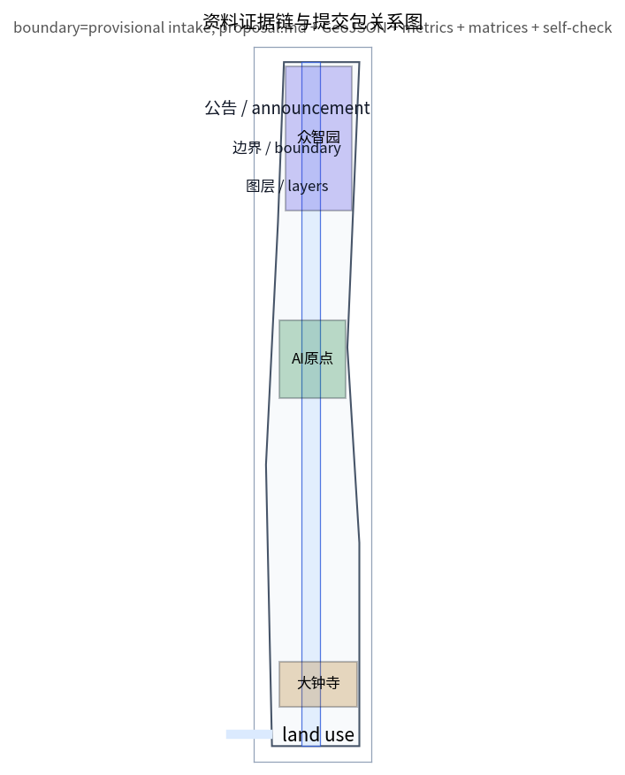
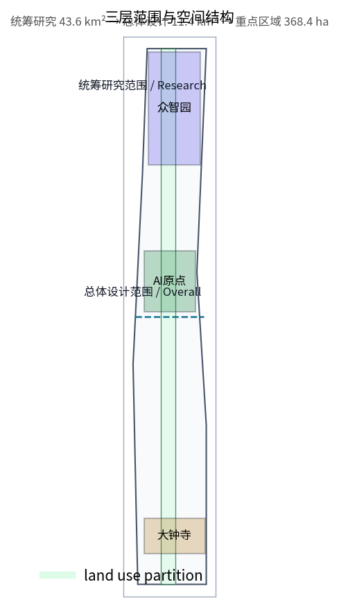
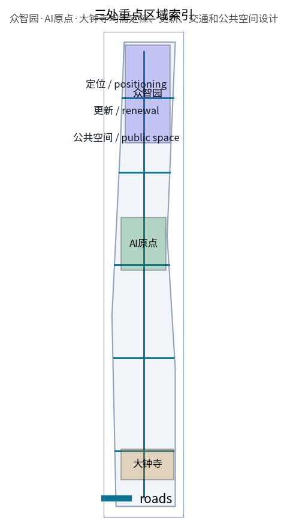
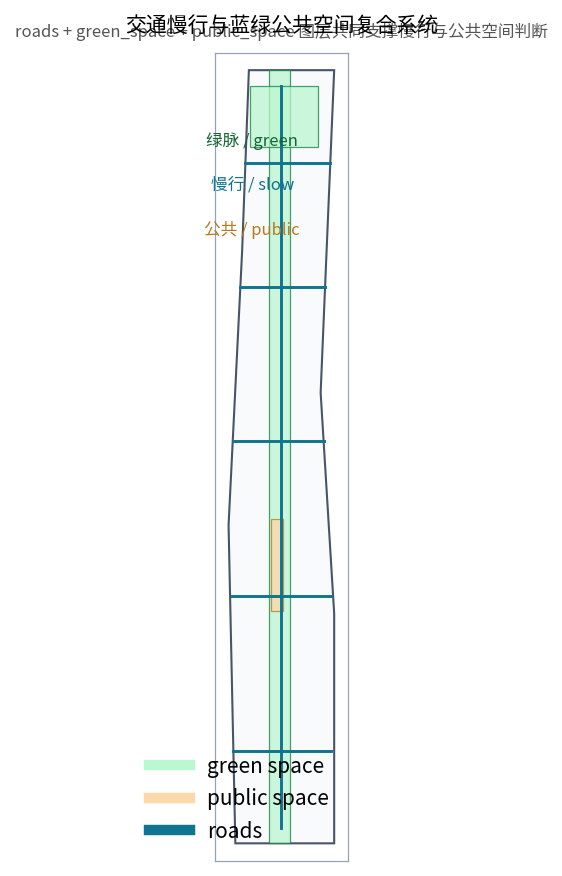
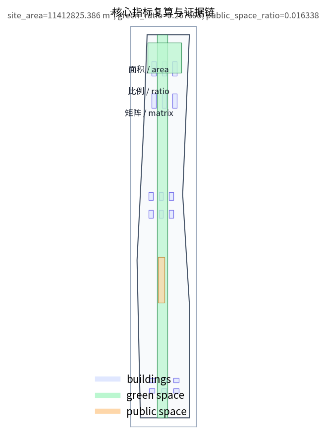

Jing-Zhang AI Symbiosis Belt: Centennial Jing-Zhang AI Innovation Belt Urban Design
A design proposal organizing the Jing-Zhang railway heritage park as the public-space spine with three AI anchors: Zhongzhiyuan AI Acceleration Area, Beijing AI Origin Community, and Dazhongsi AI Industry Cluster.
Jing-Zhang AI Symbiosis Belt: Centennial Jing-Zhang AI Innovation Belt Urban Design
Design Basis and Source List
This proposal uses the official pre-qualification announcement and the machine-readable site package as its primary basis Source Source. The submitted geometry is provisional and is clearly labelled as a design model, not an official redline. After official polygons are released, all geometry and metrics must be recalculated.

The source registry separates formal-ready, background-only, provisional-only and needs-review materials Source. The processed fact pack is a reading navigation layer, not a new authority source Source.
Three-Level Scope Framework
The three levels are the 43.6 km2 coordinated research area, the 11.4 km2 overall design area, and the 368.4 ha key detailed design area Depth. The concept "one belt, three cores, multi-node scenarios, and a blue-green slow-mobility loop" is a working method, not a new statutory boundary Depth.

Coordinated Research Area: Industry and Future City Research
The innovation chain is organised as university incubation, open-source collaboration, enterprise transformation, public experience, and global communication Source. The Zhongguancun technology-service wing and Xiaoyuehe scenario-empowerment wing support the three key areas Standard. Future city form research focuses on how AI changes work, life, mobility and public services, and is presented as a conceptual suggestion for professional deepening.
Overall Design Area: Urban Renewal and Regulatory-Plan-Level Urban Design
The overall design area uses the submitted land-use, building, road, green-space and public-space layers as the reviewable evidence Spatial data Spatial data Metric. Renewal follows a low-disturbance, high-mix and reversible logic; demolition or new-build decisions wait for official ownership and regulatory control confirmation Depth.
Detailed Design of Key Areas
Zhongzhiyuan AI Acceleration Area focuses on the national AI platform, full-stack innovation, standards and safety governance Spatial data. Beijing AI Origin Community focuses on university-adjacent transformation, open source and talent services Spatial data. Dazhongsi AI Industry Cluster focuses on AI agents, smart terminals, content consumption and station-area integration Spatial data. Detailed design is governed by the three-key-area depth item Depth.

AI Innovation Ecosystem, Personas, and AI+ Scenarios
Five personas are defined: open-source developers, start-up teams, enterprise visitors, local residents, and university members Source. Ten scenario cards and three industry test scenarios are spatially anchored to the public-space, green-space and road layers Spatial data Spatial data. All scenarios follow data-minimisation, explainability and human-review principles.
Land Use, Building Scale, and Retain-Renovate-Demolish Strategy
Land use uses the MNR classification guide and the submitted partition layer Standard Spatial data. FAR remains unknown and is documented in metrics.json with a reason Metric. The retain-renovate-demolish method is a framework; parcel-level conclusions wait for official ownership and control data Depth.
Transport, Rail, Municipal Infrastructure, and Public Services
The transport proposal combines one Jing-Zhang slow-mobility green axis with five horizontal innovation service roads and station-area connections Spatial data Depth. Municipal and new-infrastructure strategies are suggestions pending engineering confirmation Depth.

Blue-Green Network, Public Space, and Urban Character
The blue-green network uses the Jing-Zhang heritage park as the spine and connects the Qinghe and Xiaoyuehe river systems with surrounding communities Spatial data Spatial data. Green and public-space ratios are recomputed from the same layers Metric Metric. Urban character fuses railway heritage, Zhongguancun innovation culture and AI culture Depth.
Renewal Projects, Implementation Policy, and Phasing
Six renewal projects are proposed, including the Jing-Zhang slow-mobility seam, the Zhongzhiyuan Qinghe innovation interface, the AI Origin community transformation street, the Dazhongsi station four-quadrant connection, AI public-service and edge-computing nodes, and the global AI week public route Spatial data. Phasing is organised as near-term pilots, mid-term renewal and long-term governance Depth.
Metrics, Area Recalculation, and Compliance Matrix
Core visual metrics are known, finite and recomputable from the submitted geometry in EPSG:4548 Metric Metric Metric. The compliance matrix covers all official announcement tasks and agent.1 to agent.6 requirements Depth.

Risk, Copyright, and Compliance
Risks include provisional boundary precision, missing regulatory control lines, unclear ownership, incomplete municipal data, and operational coordination needs Spatial data Depth. All spatial ideas are conceptual suggestions and reference schemes, not approved statutory planning or implementation commitments.
References
- brief/public-brief.md
- brief/site-package/design_brief.json
- brief/site-package/agent_taskbook.json
- data/source_registry.json
- Structured evidence: sources.json, metrics.json, compliance_matrix.json, standard_matrix.json, design_depth_matrix.json